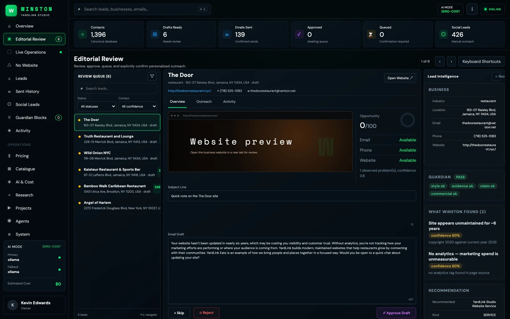
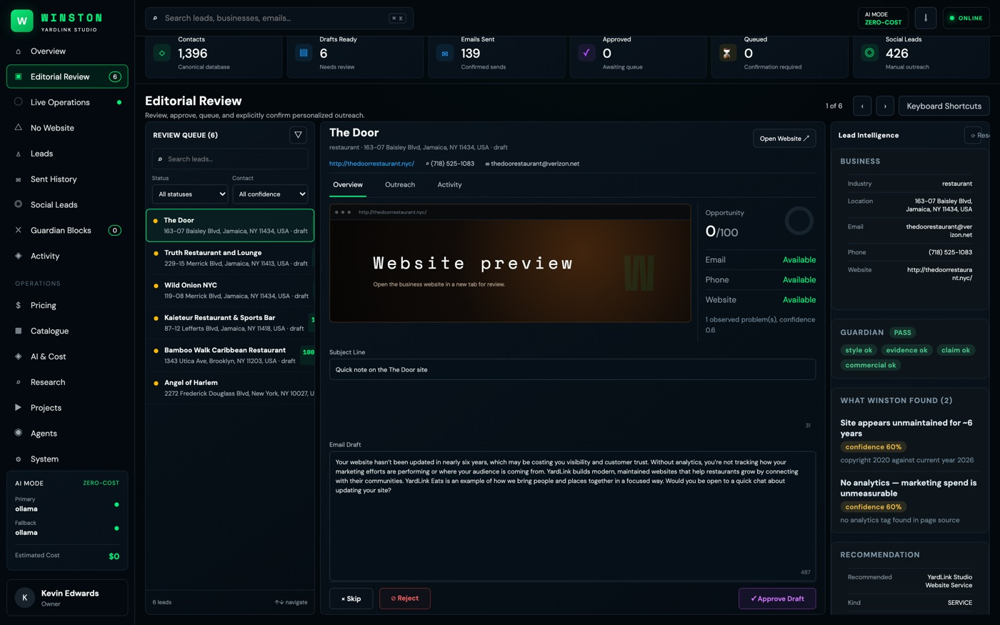
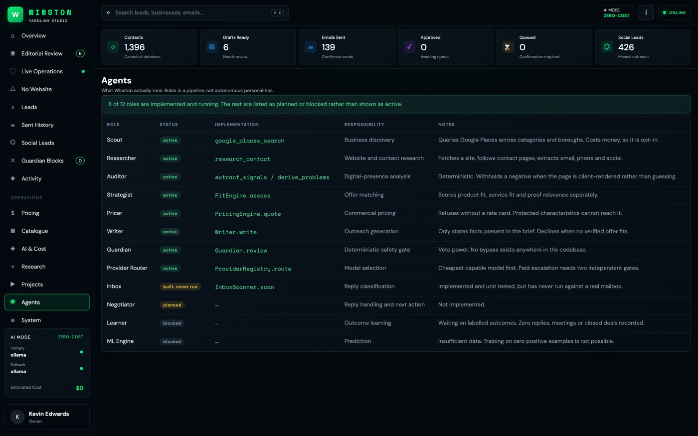

Winston
YardLink Studio's internal AI sales intelligence and outreach operating system.
Winston is the system that finds YardLink Studio its customers. It looks up a local business, works out what is actually wrong with their digital presence, decides whether YardLink can genuinely help, prices the work, writes the email, checks that email against the evidence, and then waits for a human to approve it before anything is sent.
It is not an email bot. An email bot sends a template to a list. Winston has to be able to answer "why are we contacting this business, and what exactly are we offering them," and it has to be right, because the message goes out with the company name on it.
What I built
The entire system: the research pipeline, the problem detection with evidence and confidence scoring, the catalogue that knows what the company can legitimately sell, the pricing model, the drafting layer, the validation layer, the approval queue, and the inbox handling for replies and bounces.
The work is split into modules with separate responsibilities, because each stage has a different contract: Scout finds prospects, Researcher investigates, Auditor identifies problems, Strategist picks the offer, Pricer estimates scope, Writer drafts, Guardian validates, and Inbox classifies replies. Negotiator and Learner are designed but not yet built. These are functions with defined inputs and outputs, not separate language models wearing name badges.
The interesting engineering
- Guardian can veto, and it never uses AI to do it. Every check is pattern matching against stored evidence. Asking one model whether another model made something up is circular reasoning, and it costs money to get an unreliable answer. Deterministic rules are reproducible, explainable, and free.
- Nothing gets sent without a person. A blocked draft is saved for inspection but never reaches the approval queue, because a message that should not be sent should not be one click away from going out.
- The catalogue knows proof from product. Some projects demonstrate capability and some are actually for sale. Winston enforces that difference, so it can never email a restaurant offering to sell them an internal tool.
Running it for almost nothing
Everything runs on local models. Simple work like classifying a reply goes to a small 3B model, and harder work like drafting or auditing goes to an 8B model. Routing by difficulty means the system stays sharp where it matters and cheap everywhere else.
A paid provider is unreachable unless it is explicitly switched on, so a free service failing never quietly authorizes spending money. A stronger model also cannot bypass Guardian, because which model wrote the text has nothing to do with whether the text is allowed to be sent.
How it connects to the Website Builder
When Winston finds a business that needs a website, it produces a structured handoff shaped to the Builder's real data format, which an operator then imports. This is deliberately a documented handoff and not an API integration, because the Builder does not expose a suitable HTTP API. Inventing one would have meant faking a connection that does not exist.


